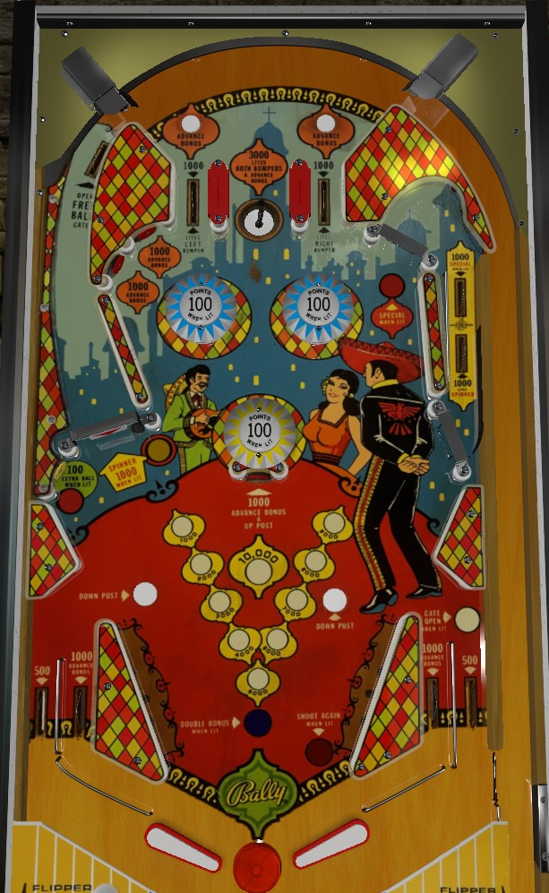

Shoot the right u-turn lane to light the left spinner, then shoot nothing but the left spinner all day once it's lit for 1,000 points a spin. For a bit of added safety, shoot the center standup target to raise the center post, but the feed out of the bumpers after a spinner shot is liable to hit one of the rollover buttons that lowers the post.
The two rollover buttons in the top funnel area of the game score 1,000 points and a bonus advance. The left top lane scores 1,000 points and lights the left blue bumper for 100 points per pop. The right top lane scores 1,000 points and lights the right blue bumper. The center saucer scores 3,000 points, 3 bonus advances, and lights both blue bumpers, but note that it is possible for the ball to rim past the saucer.
Score 1,000 points and a bonus advance.
Scores 2,000 points and lights the spinner. If the base bonus is maxed out at 19,000 points, this lane also scores a special.
The spinner scores 100 points per spin, or 1,000 per spin when lit after making the upper right turnaround lane. At the end of the left lane behind the spinner is a switch that opens a gate in the right out lane.
Scores 100 points. If the current base bonus is exactly 10,000, 12,000, or 15,000 points, this target is also lit for extra ball.
Scores 1,000 points and a bonus advance, and also raises the center post between the flippers.
Amigo has a conventional in/out lane setup. Out lanes score 500 points. In lanes score 1,000 points and a bonus advance. Slingshots score 10 points and are a fair bit larger than most slingshots of the era.
A gate in the right out lane redirects the ball back to the shooter lane for a replunge. It is opened by activating the switch in the left lane behind the left spinner and closes once used or once the current ball drains.
The center standup target raises a center post, which comptely blocks off the center drain. The post is lowered when the ball drains or when either of the two rollover buttons near the tops of the slingshots are pressed.
Bonus is advanced by top rollover buttons, upper left standup targets, the center standup target, and the in lanes. The top saucer gives 3 bonus advances. Max base bonus is 19,000 points. At 10,000, 12,000, and 15,000, the lower left standup target is lit for extra ball; at 19,000, the upper right turnaround lane is lit for special. Double bonus is given for free on balls 3 and 5; there is no skill based method for earning double bonus at any other time, and there is no bonus multiplier beyond 2x. There is also no bonus holdover of any kind and no mid-ball bonus collect.

All copyrighted names and terms in this document belong to their respective owners. The information provided in this document is for educational purposes only and no infringement is intended.
Back to top To game list To main page